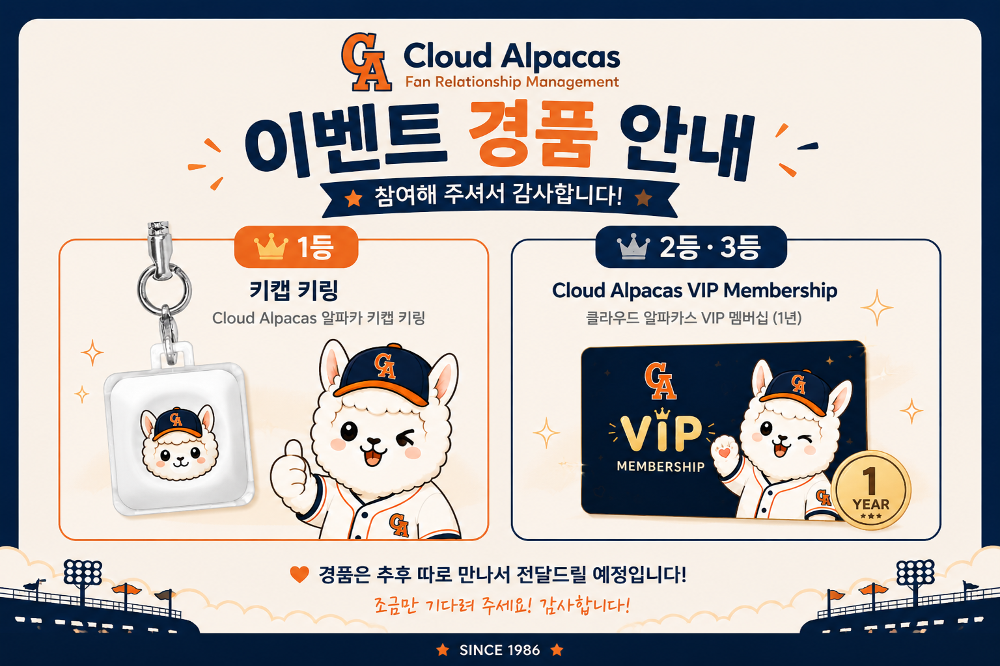

To our quiz winners

준비한 선물이 발표일까지 도착하지 못했어요. 🥲
행사 후 직접 만나서 전달드릴게요. 조금만 기다려 주세요!
디자인 노트Ending(26) 다음, 관객에게 전달하는 실제 안내 슬라이드. 작은 human moment이므로 architecture·data 슬라이드처럼 만들지 않는다 — 큰 sad alpaca 이미지 + 한 줄 안내가 전부. 사과문처럼 장황하게 쓰지 않는다. 별도 Winner 명단·Q&A 슬라이드는 만들지 않는다. 이 슬라이드로 PPT 종료 → 필요 시 Salesforce Org LIVE → Q&A.